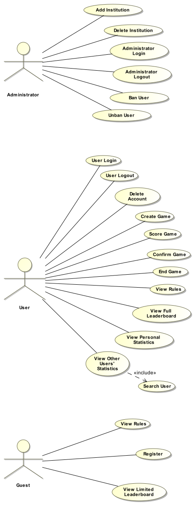

Terminology (common terms used in this document that will need a definition - ie. trick shot or bounce shot)
Audience
Product scope (how are we approaching this product)
Assumptions and independencies
Evolution of plans (ie. starting with WLU and expanding later)
References (? do we have any)
Contributors (CP317 class - summer 2013)
Overview of Requirements document (what the document will provide and how it is formatted)
Product description
product perspective
what the product is
how to use it
rules
product functions
start new game
viewing leaderboard
viewing personal stats
loging in
signing up (?)
actors and use cases
Operating environment
Hopper server?
constraints (technical constraints)
External interface requirements
user interface
software interface
True skill (?) - analytic software
OpenID
communications interface (where our website is)
Specific requirements (outlines all software being used)
functions (ie. software shall validate the user has used valid email address)
database
performance requirements
Systems Features
new game
select a cup
create tournament (?)
record stats
updating live leaderboard
filtering names in a game
filtering top 5 games personal
Other Non-functional requirements
performance
when stats are updated
security
user login
admin login
Software Quality Attributes
Other Requirements (?)
Elements of project plan
standards we are using
control plan
quality control plan
scheduling plan
test
=======
Introduction
Product purpose (what is it providing)
For society
For customer
Competition
Entertainment
Terminology (common terms used in this document that will need a definition - ie. trick shot or bounce shot)
Audience
The scope of this project serves people who want to record Beer Pong online. This is to be done by HTML pages and providing users
with an interesting and webpage based interface that allows them to record, compete with other players and also the system will
record them win and lose times in their account.
Assumptions and Dependencies
This section provides the known dependencies and assumptions at the start of the project; all subsequent additions shall
be managed within project objects (e.g., risk, project schedule, etc.)
Moreover,this section specifies completed, ongoing or future projects or the linkages to established programs, on which this
project depends in order to be successful, or which are dependent on this project. (!!Now no know dependencies. Add later.)
Evolution of plans (ie. starting with WLU and expanding later)
The Project Evolution Plan will preserve and grow in website
- Allow advertising on site
- Moving to mult-server
- Make available for mobile
References (? do we have any)
Contributors (CP317 class - summer 2013)
George Lifchits
Overview of Requirements document (what the document will provide and how it is formatted)
Product description
Product perspective
What the product is
Pong Tracker is a web-based database for tracking statistics of a given individual’s Beer Pong performance. It collects a number of different metrics via its intuitive real-time collection interface. Using this data, a leaderboard as well as user analytics will be readily available for users to see.
How to use it
Users will have the ability to search other users and challenge them to a game. One user will be responsible for the operation of the interface, then following a confirmation from one member of the opposite team, will successfully store the data of one game.
Pong Tracker also offers the ability to view analytics of players. The analytics page is essentially a user friendly display of all stats gathered from the interface.
A leaderboard, filtered by user region or institution, will also be available to define the strongest users. To accomplish the task of ranking users, an algorithm such as Microsoft TrueSkill™ will be implemented.
Beer Pong Rules
Eye-to-eye determines the first team to shoot
Should both parties hit their eye-to-eye, eye-to-eye resumes until only one team scores
Should both members of a team score, they shoot again
Should after a shot, the ball spin in the rim of the opponents' cup, the defending team may attempt to blow the ball out of the cup. If the ball is ejected and remains dry, no cup is scored
Air balls result in a loss of turn, if it was the second shot you're lucky
Should a shot roll/bounce back on the table (never once touching the ground) the shooting team member may attempt a trick shot
Each team is entitled to one re-rack at any point throughout the game
Bounce shots count as two cups scored, the cup hit, as well as one selected by the offending team are counted
The defending team may attempt to disrupt the ball once it has made contact with the table.
Should two non-bounce shots hit the same cup, the cup hit, as well as two selected by the offending team are counted
Any knocking over of a cup is considered a Party Foul and all disrupted cups are to be removed at the discredit of the offender.
If the ball is disrupted by the defending team (BEFORE it has made contact with the table) a cup is lost by the defending team this is also considered a Party Foul
Should a cup in the hand of a player be sunk, the offending team is automatically victorious and the Game Over option should be selected.
Terminology
Air Balls: A shot that misses the table altogether
Eye-to-eye: A means of deciding the first team to shoot. Consists of a member of each team simultaneously shooting while making full eye contact with the other party. Should a cup be scored, the offending party is awarded the first shot.
Party Foul: An infringement on the rules of the game, or knocking over a cup, spilling its contents.
Re-Rack: A request to shuffle the orientation of the remaining cups on the opposing side.
Trick Shots: any shot containing either multi-directional trajectory OR non-standard origination
Product Functions
A user friendly, web-based application (computer and mobile) in which users can create and score beer pong games while they are being played
Must have the ability to show personal statistics regarding wins, losses, cups sunk, and preferred partner
Must have the ability to show which end user is the best beer pong player using ranking system defined in section (insert section reference here)
Actors and Use Cases
Actors for this product include:
Administrator - is an individual who has special privileges within the website. An administrator can login, logout, add an institution, delete an institution, ban a user, and unban a user. Administrators and end user accounts are completely separate.
End User - is an individual who uses the website for active game play. In terms of game play, the end user may create, score or confirm a game. End users can view the entire leaderboard, login, logout, inactivate their account, view their personal statistics, and view other players' statistics.
Guest - is an individual who is not using the site for active game play. A guest may view a limited version of the leaderboard and may register. Once a guest has registered, they become an end user.
Use cases for the actor's listed above include:
Admin Login - an administrator must provide their username and password as discussed in section (reference to section here) to authenticate their identity
Admin Logout - an administrator need only select the "Logout" option to have access to their account session terminated
Add Institution - an administrator has the ability to add institutions that guests select when registering to become a user.
Delete Institution - an administrator has the ability to delete institutions that guests select when registering to become a user.
Ban User - an administrator can ban a user who has not conformed to the site's rules or policies
Unban User - an administrator can lift a ban on a user who has not confirmed to the site's rules or policies
User Login - an end user must provide their username and password as discussed in section (reference to section here) to authenticate their identity
User Logout - an end user need only select the "Logout" option to have access to their account session terminated
Create Game - an end user can create a beer pong game
Score Game - once a beer pong game has been created, an end user uses the interface to record the results of the game as it is being played
Confirm Game Results - once a game has been completed, an end user must confirm the results of the game in order for the game data in question to be used and considered in the statistics and leaderboard areas
View Personal Statistics - an end user may view their personal statistics at any time given they are logged in. The statistics shown here include only games that have been confirmed by players involved in a particular game.
View Other Users' Statistics - an end user may view other players' personal statistics at any time given they are logged in. The statistics shown here include only games that have been confirmed by players involved in a particular game.
View Full Leaderboard - an end user may view the entire leaderboard at any time given they are logged in. The statistics shown here include only games that have been confirmed by players involved in a particular game.
Register - a guest must provide information as stated in section (reference to section here) in order to facilitate the login functionality
View Limited Leaderboard - a guest can see the top ten players on the website. For full access to the leaderboard, a guest must become a user

Operating environment
Pong Tracker will be required to run off of a unix server, namely Hopper.
Constraints (technical constraints)
Both desktop and mobile friendly views.
SQL database architecture
Be able to support multiple interfaces writing to the database simultaneously.
Designed to be implemented on a Unix server with various accompanying plugins (such as SQL, SSL etc.) also functional.
External interface requirements
User interface
The user interface for the beer pong network is
a dynamic website.
Users log in, and the content
changes according to their account level.
Users will see a front page with their
current statistics. They have the ability
to create a new game.
The game interface will be entirely visual,
to simulate the experience of a Pong game.
The function of the interface is to input
data about the game into the database as easily
and intuitively as possible.
Mobile Component
In order to make data entry more accessible,
we hope to implement a mobile-ready version of
the web user interface
The mobile website will be a simplified version
of the main website — but it must
be able to fully support game data entry
Software interface
The system operates on modern, standard internet browsers (Internet Explorer 9/10,
Firefox, Google Chrome, Safari).
The system uses a database.
Analytic Algorithm
The system implements a library which contains an analytic algorithm
The library allows us to specify what inputs we give the algorithm which then calculates the skill level in comparision to other users.
The system allows a user to login with their Facebook account
The SDK will allow the system to grab a user's profile information
communications interface (where our website is)
Specific requirements (outlines all software being used)
Functions (ie. software shall validate the user has used valid email address)
Database
Performance requirements
System Features
User Profile
Desciption
Users register in order to play games and record stats. Users have the option to create an account directly on the website, or to login and register with Facebook Login. The user profile page displays personal information and stats.
Stimulus/Response Sequence
From the main page, selecting login, a user can login to the website, or through Facebook Login.
Functional Requirements
REQ-1 Only one user is logged in at one time
REQ-2 Only the logged in users personal information and stats are displayed
Create a Game
Desciption
Games are the main feature of the website.
Stimulus/Response Sequence
A new game is created by a registered user. A game consists of four players. When a new game is created, the registered users invite other players to join the game, up to a maximum of 3. When three players are invited, the game starts, and the registered user who created the game sees the game user-interface.
Functional Requirements
REQ-1 The user who creates a game must be registered
REQ-2 The user who creates the game must not be in another game at the same time
REQ-3 There must be at least two registered users in a game
REQ-4 Each team must have at least one registered user
Play a Game
Desciption
During a game, players interact with the game user-interface. Actions in the physical game are recorded in the game user-interface by selecting a player, a cup, and the applicable action. This is required for advancement of the game.
Stimulus/Response Sequence
Actions by a player, associated with specific cups, are selected throughout the game, as they are done in the physical game.
Functional Requirements
REQ-1 Only one cup is selected at a time
REQ-2 Only one action per cup is selected at a time
REQ-3 Only one player can be associated with an action
Validate a Game
Desciption
At the conclusion of a game, a game must be confirmed for validity.
Stimulus/Response Sequence
At the end of a game, one registered user from each team must confirm validity. Once the game is finished, it is considered completely finished, and stats will be calculated and recorded. A team/registered user may deny validity, and the game will not be factored into stats.
Functional Requirements
REQ-1 One registered user from each team must confirm validity for a game to be included in the stats
REQ-2 A team/registered user must be able to deny validity of a game
Create a Tournament
Desciption
A tournament is a sequential group of n games played by at least m number of teams. At the end of the tournament, the rank of each team is calculated by the system.
Stimulus/Response Sequence
A tournament is created by a registered user. A tournament consists of m teams of two. When a tournament is created, registered users invite other players to join the tournament. When every team has two players, registered users view the tournament user-interface. From the tournament user-interface, registered users choose to start a game. Games are played in an order determined by the teams.
Functional Requirements
REQ-1 There must be at least two teams in a tournament
REQ-2 Each game in the tournament has the same functional requirements as a regular game
REQ-3 A registered user from every game must be logged in, so there is a user-interface for each game
REQ-4 A team can only be in one game at a time
Statistics
Desciption
Stats are viewable throughout the website. Stats are calculated by the server are stored in a database. Stats are recorded for registered users only. The top ten players are displayed on the main page of the website, while all other stats are viewable by registered users only. Stats are searchable by user.
Stimulus/Response Sequence
At the end of a game, the system will calculate and record analytics. Going to the user profile page displays the user’s personal stats. Going to the statistics page displays the top players, and is searchable by user(s).
Functional Requirements
REQ-1 A game must finish completely – confirmed by all necessary players – before stats are calculated and committed to the database
REQ-2 Analytics are only calculated and recorded for registered users
Social Media
Desciption
Registered users logged in using Facebook Login post status updates regarding actions in a game, the result of a game or tournament, or stats of the user.
Stimulus/Response Sequence
Throughout the user-interface of the website, including the game and tournament user-interface, a player selects whether to post a status to Facebook.
Functional Requirements
REQ-1 A registered user must be logged in using Facebook Login
REQ-2 A user must choose to post a status – the system cannot post a status without permission